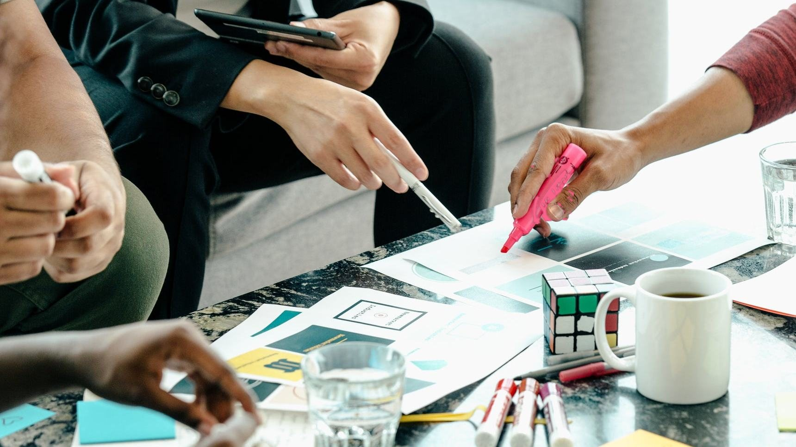
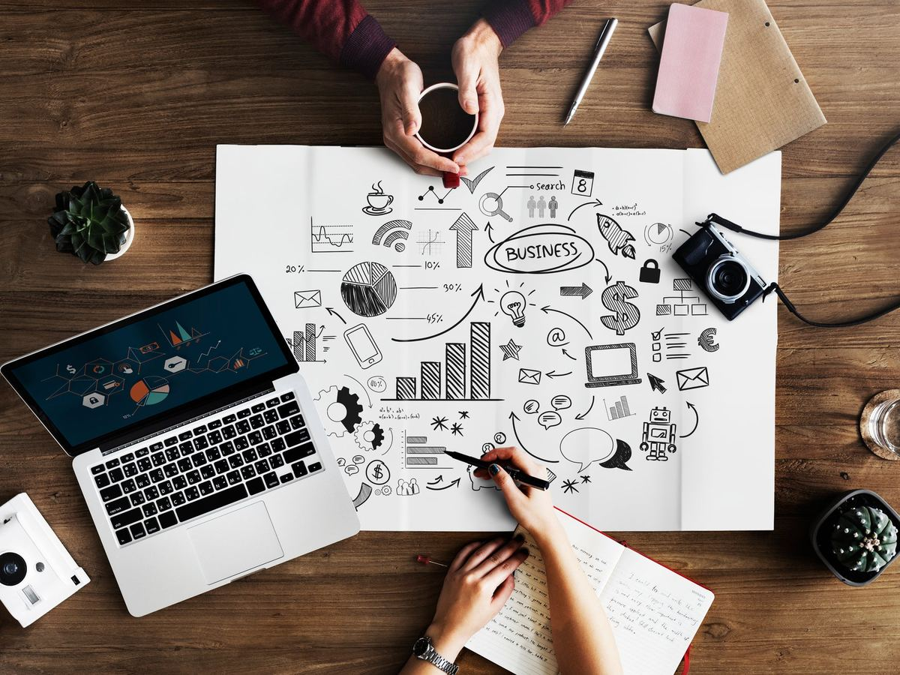
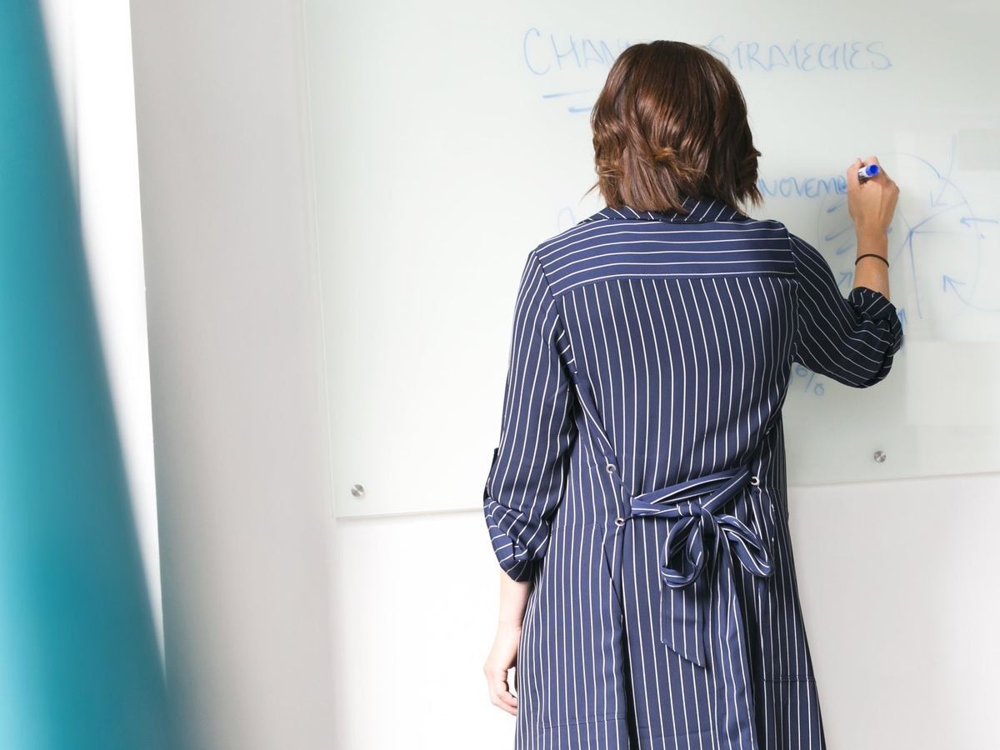

Eğitim Organizasyonları ve Aktiviteler
Eğitim, yalnızca bilgi aktarmak değil; öğrenmeyi deneyime, deneyimi gelişime ve gelişimi performansa dönüştürmektir.
Her organizasyonu kuruma özel kurguluyoruz
TUKSAL Danışmanlık olarak kurumların ve ekiplerin ihtiyaçlarına yönelik eğitim organizasyonları, gelişim programları ve interaktif aktiviteler tasarlıyor ve uyguluyoruz.
Her organizasyonu kurumun hedefleri, çalışan profili ve ihtiyaçları doğrultusunda özel olarak kurguluyoruz.
Eğitim başlıklarını inceleyin
Kuruma Özel Eğitim Programları
Kurumların gelişim hedeflerini analiz ederek; çalışanların mesleki ve kişisel yetkinliklerini geliştirmeye yönelik eğitim programları oluşturuyoruz.
Programlarımız kapsamında ele aldığımız başlıklar:
- Liderlik ve yöneticilik
- Takım çalışması ve ekip ruhu
- İletişim ve etkili iletişim
- Problem çözme ve analitik düşünme
- Zaman ve performans yönetimi
- Satış ve müşteri ilişkileri
- Motivasyon ve çalışan bağlılığı
- İşletme ve yönetim becerileri
- Kişisel gelişim
- Yaratıcı düşünme ve inovasyon
Bu ve benzeri farklı başlıklarda çalışmalar gerçekleştiriyoruz.
Eğitimden Deneyime
Klasik eğitim anlayışının ötesine geçerek katılımcıların sürece aktif olarak dahil olduğu atölyeler, takım oyunları, yarışmalar, uygulamalı çalışmalar ve deneyimsel aktiviteler tasarlıyoruz.
Bu aktiviteler sayesinde katılımcıların öğrendiklerini uygulamaları, ekip içindeki iletişimlerini güçlendirmeleri ve birlikte problem çözme becerilerini geliştirmeleri hedefleniyor.

Kurumsal Aktivite ve Takım Çalışmaları
Çalışanların motivasyonunu artırmak, ekip içi iletişimi güçlendirmek ve kurum kültürünü desteklemek amacıyla kurumlara özel aktiviteler planlıyoruz.
Etkinlikleri; eğitim + oyun + deneyim + rekabet + takım çalışması unsurlarını bir araya getirecek şekilde tasarlayabiliyoruz.
Kim daha iyi çalışıyor değil, kim daha iyi takım oluyor
Organizasyonun Tüm Sürecini Yönetiyoruz
İhtiyaç analizi ve konsept geliştirmeden eğitmen ve içerik planlamasına, mekan ve teknik organizasyondan katılımcı yönetimine kadar sürecin tamamını profesyonel şekilde koordine ediyoruz.
İhtiyaç analizi ve konsept geliştirme
Kurumun gelişim hedeflerini, çalışan profilini ve ihtiyaçlarını analiz ediyor; organizasyonun konseptini bu doğrultuda geliştiriyoruz.
Eğitmen ve içerik planlaması
Programın içeriğini, eğitmenlerini, atölye ve aktivite formatlarını kurumun hedeflerine uygun şekilde planlıyoruz.
Mekan ve teknik organizasyon
Mekanı ve teknik organizasyonu hedef kitle ve etkinlik formatına uygun şekilde planlıyoruz.
Katılımcı yönetimi
Organizasyon boyunca katılımcı yönetimini üstleniyoruz.
Sadece eğitim alan değil, öğrendiğini deneyimleyen ekipler
TUKSAL Danışmanlık olarak amacımız; çalışanların sadece eğitim aldığı değil, öğrendiğini deneyimlediği ve gelişimi iş sonuçlarına yansıttığı organizasyonlar tasarlamaktır.
Öğrenin. Deneyimleyin. Gelişin. Performansınızı yükseltin.
Ekibiniz için bir eğitim organizasyonu ya da aktivite tasarlayalım
Eğitim, oyun ve deneyim bir arada
İhtiyacınızı paylaşın; kurumunuzun hedefleri ve çalışan profili doğrultusunda size özel bir program önerelim.
Atölyeler, takım oyunları ve uygulamalı çalışmalarla öğrenmeyi deneyime dönüştüren eğitim organizasyonları tasarlıyoruz.